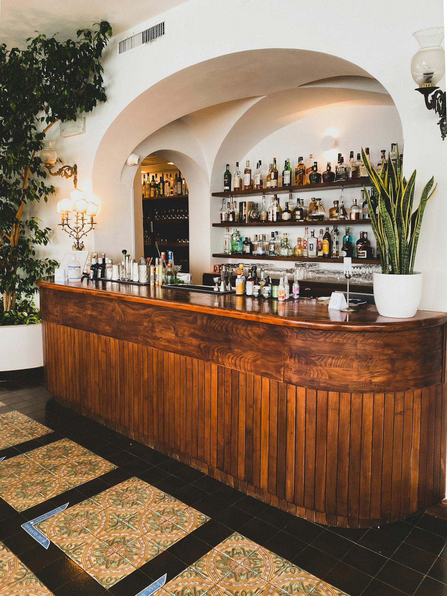
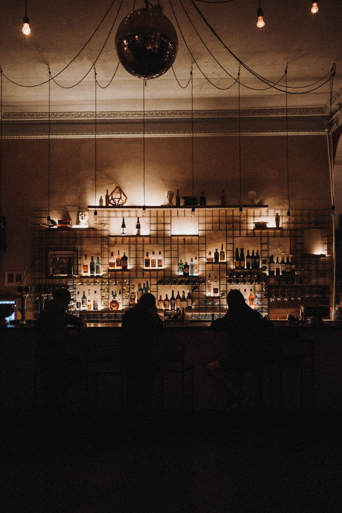
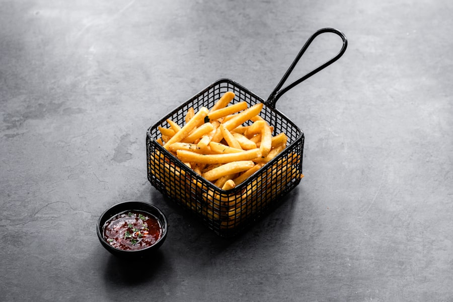
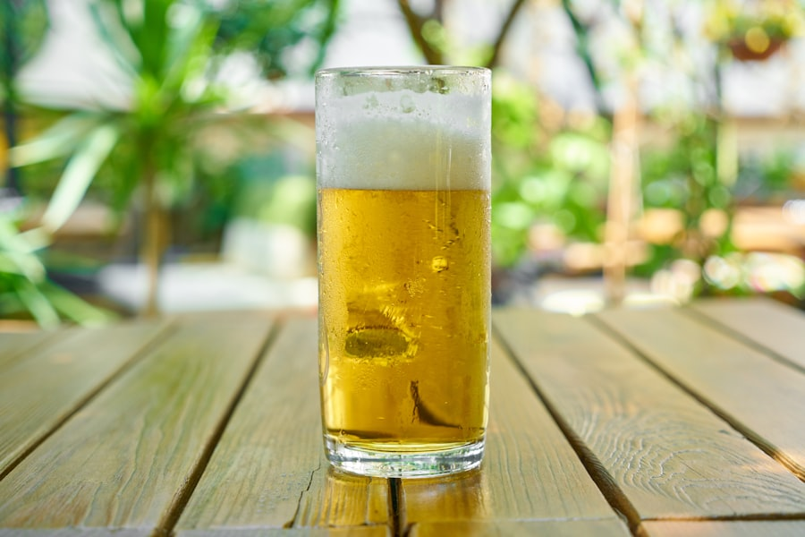
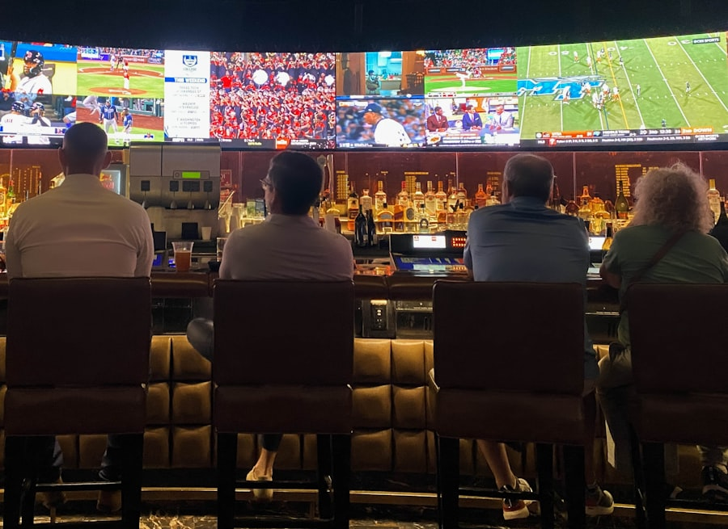
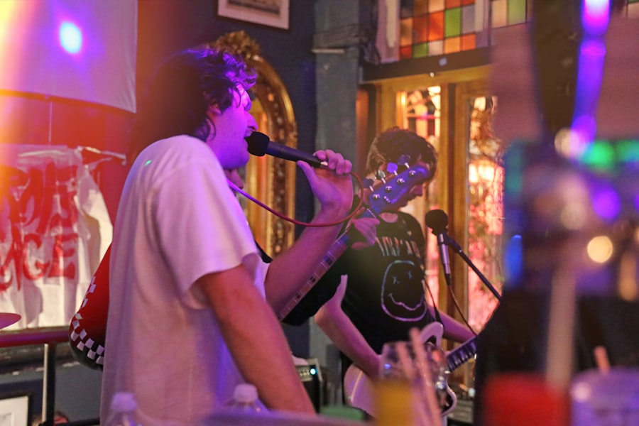
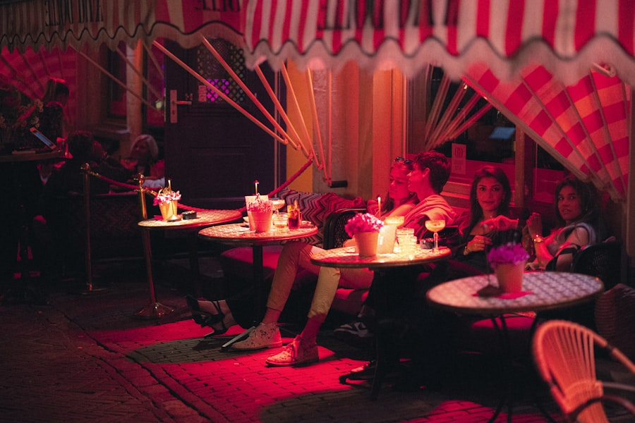

Desde 1970 · Vila das Belezas · São Paulo
Bar da Vila
Boteco de vila de verdade: cerveja gelada, futebol na TV e porção pra dividir.
- 55+anos de vila
- 4.8 ★no Google
- R$ 40–60preço médio
1970 — nossa história
O boteco que a vila cresceu vendo
Meio século de balcão, freguês e futebol de domingo. O Bar da Vila abre as portas na Vila das Belezas desde 1970 — e segue com o mesmo espírito de vila: todo mundo se conhece, a cerveja é gelada e ninguém sai sem um causo.
Ponto do bairro para o happy hour, a rodada de sábado e o jogo com os amigos na TV. Cozinha de boteco, atendimento de gente e música boa na agenda — do samba à sofrência.

- Cerveja sempre geladaPra sair daqui só depois da segunda garrafa
- Futebol na TVJogo do coração com a torcida da vila
- Porções de botecoFeitas na hora, tamanho família de vila
- Agenda de eventosSamba, pagode e os clássicos dos anos 70
- Cerveja gelada
- Eventos
- Futebol na TV
- Porções
1970 — para beber e petiscar
Cardápio
Do chope ao cafezinho depois do almoço.
- Long neck geladaBrahma, Heineken, CoronaR$ 10,00
- LitrãoBrahma, AntarcticaR$ 14,00
- 600 mlAmstel, OriginalR$ 12,00
- ChopePilsen ou claroR$ 8,00
- CaipirinhaLimão ou fruta da estaçãoR$ 15,00
- Gin tônicaCom limão e zimbroR$ 22,00
- Coquetel autoralReceita da casaR$ 20,00
- Batata fritaCrocante, com sal e pimentaR$ 28,00
- Mandioca fritaCom alho e manteigaR$ 26,00
- Frango a passarinhoCom alho fritoR$ 34,00
- Calabresa aceboladaCom pão e vinagreteR$ 32,00
- Ovo de codornaNa molheira de sempreR$ 12,00
- AmendoimTorrado na horaR$ 8,00
- TorresmoCrocrante, com limãoR$ 22,00
- CachaçaEnvelhecida e artesanalR$ 6,00
- GinNacional ou importadoR$ 16,00
- VodkaGarrafa ou doseR$ 10,00
- WhiskyCom gelo ou puroR$ 18,00
- Sucos naturaisLaranja, limão, abacaxiR$ 10,00
- RefrigerantesLata ou garrafaR$ 6,00
- Água com ou sem gásGelada, claroR$ 5,00
- CaféDepois do almoço é de leiR$ 5,00
Preços de referência — cardápio oficial em breve.
1970 — agita a vila
Eventos
A agenda acontece aqui no bar e no Instagram @bardavila.1970.
-
Samba na VilaMúsica ao vivo
Roda de samba com os músicos do bairro.
-
Futebol na TVTodo domingo
Jogo do coração com a torcida da vila.
-
Noite do ClássicoToda sexta
Os sucessos dos anos 70 no som do bar.
1970 — o bar e a comida
Galeria
Um pouco do clima do bar — ambiente, comida e os clássicos de boteco.






1970 — apareça
Como chegar
Endereço
Rua Coronel Luís Schimidt, 219
Vila das Belezas — São Paulo/SP
CEP 05841-130
Horários
- Ter a Qui
- 7h – 23h
- Sex e Sáb
- 7h – 22h
- Dom
- 7h – 23h
- Segunda
- Fechado
Aceitamos
Cartão de crédito · débito · Takeaway